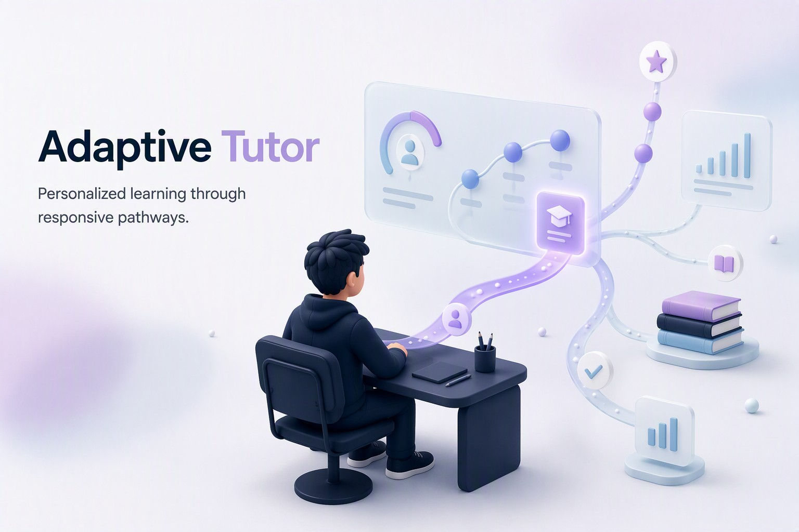
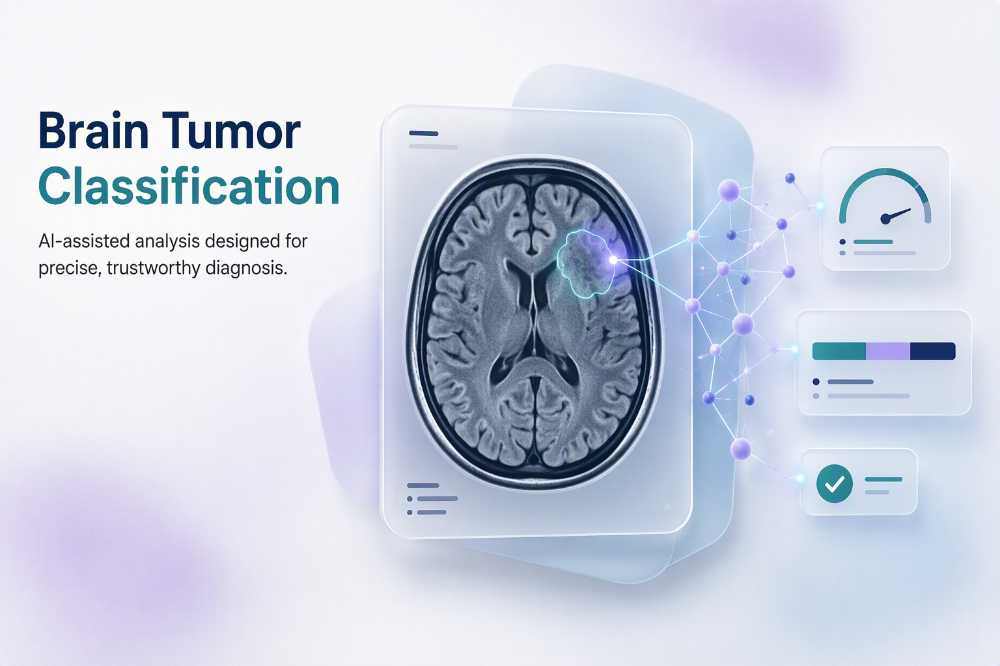
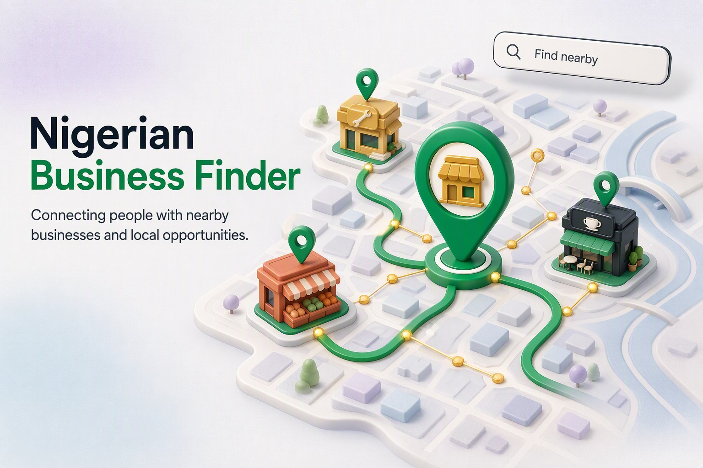

Omotayo Emmanuel Ayomide
Data Scientist & ML Engineer building intelligent systems, from medical imaging models to adaptive RAG tutors, that turn data into tools people can use.
 Python
Python TensorFlow
TensorFlow PyTorch
PyTorch R
R FastAPI
FastAPI Git
Git
- 5Technical projects
- 161,155Survey records analysed
- 12,010Images in the brain MRI dataset
- 4Training programs led at NCAIR
Featured projects
Five projects across deep learning, NLP and statistical analysis, each with a full case study.
-

Adaptive Intelligent Tutoring System (Final Year Project)
Engineered a personalized learning platform combining RAG for factual accuracy with Reinforcement Learning (RL) and Human-in-the-Loop feedback to dynamically adjust instruction.
View Case Study → of Adaptive Intelligent Tutoring System (Final Year Project) -

Brain Tumour Classification
Engineered a medical imaging model using VGG16 transfer learning to classify brain MRI scans into five categories with ~85–90% accuracy, deployed via Streamlit.
View Case Study → of Brain Tumour Classification -

VAW Effects on Mental Health
Conducted a statistical analysis of 161,155 survey records in R to measure the impact of domestic violence on women’s safety perceptions and mental health.
View Case Study → of VAW Effects on Mental Health -
Custom Facial Recognition System
Developed a customizable facial recognition system using Xception transfer learning and a two-phase training strategy to identify specific individuals while gracefully handling unknown faces.
View Case Study → of Custom Facial Recognition System -

Nigerian Business Finder
Built a location-aware Python web app that helps users discover nearby local businesses (like bukas and suya spots) using real-time API mapping.
View Case Study → of Nigerian Business Finder
Skills
The languages, frameworks and tools I use day to day.
Languages
- Python
- Java
- SQL
- R
- HTML/CSS
Frameworks & Libraries
- FastAPI
- LangChain
- LlamaIndex
- Streamlit
- PyTorch
- TensorFlow
- Scikit-Learn
- Pandas
- NumPy
Tools & Platforms
- Git
- GitHub
- VS Code
- Jupyter
- Figma
- MongoDB
- Neo4j
- Azure
About me
I’m a Machine Learning Engineer and Data Scientist with a First-Class degree in Computer Science from Elizade University. My work spans deep learning, natural language processing and data analytics, from a brain tumour detection model to an adaptive RAG tutoring bot and an analysis of Rapid Gender Assessment data on violence against women.
I served as a technical intern at the National Centre for Artificial Intelligence and Robotics (NCAIR), where I led four training programs, and spearheaded the planning of my university’s first-ever tech hackathon. I have also served as an IEEE executive committee member and a Cowrywise Student Ambassador, driving technology and financial literacy.
- Education
- First-Class degree in Computer Science, Elizade University
- Experience
- Technical intern, National Centre for Artificial Intelligence and Robotics (NCAIR)
- Focus areas
- Deep learning, natural language processing, data analytics
Volunteer & leadership
Community roles where I organised events and helped others learn.
Welfare Director
IEEE Student Branch, Elizade University Chapter
2025 – 2026
- Spearheaded the launch of the first-ever tech hackathon in my school, coordinating logistics, speaker support, and participant engagement.
- Assisted in increasing the association’s visibility across the entire campus through targeted campaigns and events.
Student Ambassador
Cowrywise
2024 – 2026
- Assisted in increasing the association’s visibility around the campus.
- Educated students on financial literacy and smart saving habits.